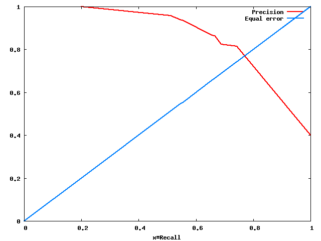
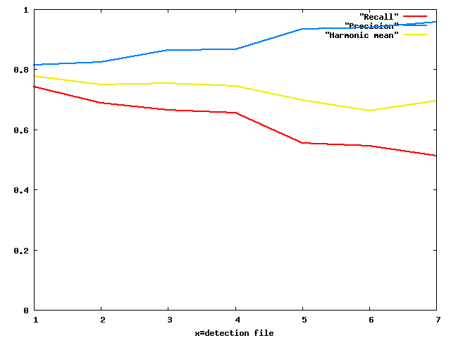
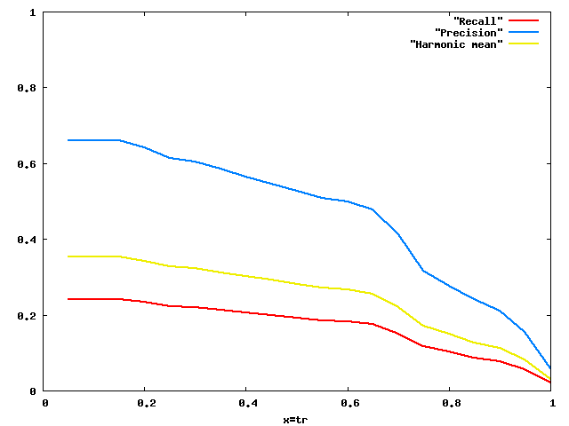
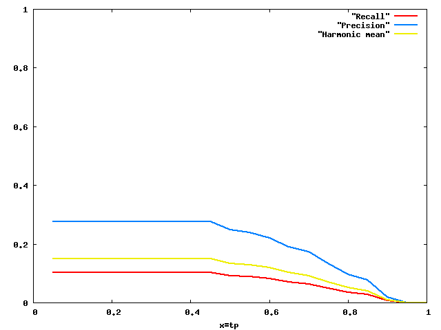

DetEval is software for the evaluation of object detection algorithms. It reads XML files containing the detection results as well as the ground truth information and writes the evaluation output in XML or LaTeX format. Data for ROC curves in ASCII text format can be created, and PDF plots are supported. The criteria at which point an object is considered as detected are configurable, and graphs can be plotted showing detection performance with varying criteria.
Details of the evaluation algorithm can be found in the scientific paper published in the journal International Journal on Document Analysis and Recognition. It is highly recommended to read this paper, since important information can only be found there!!.
You need to cite the IJDAR paper in all publications which describe work for which you used the DetEval tool.
DetEval takes as input two different sets of XML files, each one describing rectangles (bounding boxes) of object locations. One of the sets corresponds to ground truth rectangles, the other one to detected rectangles. The sets are matched, and performance measures are calculated.
Traditionally in evaluation of object detection algorithms, for a single detection file and its corresponding ground truth file, two values, recall and precision, can be calculated. They are defined as follows:
Intuitively, recall tells us how many of our objects have been detected, and precision gives us information on the amount of false alarms. Both are higher if better and should be close to 1 for perfect systems.
In order to be able to calculate these two measures (recall and precision), an evaluation tools needs to find out two things:
These decisions are not trivial, since detections are generally not 100% acurate. The amount of overlap between detection bounding boxes and ground truth bounding boxes determines whether an object has been detected or not. More precisely, the evaluation results depend on a set of user defined criteria, which will be used by all tools of this software. Plots can be created which give detection performance for different overlap requirements. The thresholds are described in more detail in the IJDAR research paper (section 4.2, equation 10).
DetEval has been developed to addresses the issue of combining quantity ("how many rectangles?") and quality ("how much of a rectangle?"). Its design has been guided by the following goals:
One rectangular bounding box is described by the tag "taggedRectangle". Its geometry is described by x,y,width and height, modelType is a application dependend numerical value which encodes the type or class of the object.
The result image and the groundtruth image must have the same name! However, if you decide to leave the directory path in the image names, the software can be configured to ignore the path or parts of it (see below).
<?xml version="1.0" encoding="UTF-8"?>
<tagset>
<image>
<imageName>images/image1.jpg</imageName>
<taggedRectangles>
<taggedRectangle x="1276" y="900" width="193" height="61" modelType="17" />
<taggedRectangle x="348" y="844" width="197" height="105" modelType="3" />
<taggedRectangle x="776" y="812" width="281" height="165" modelType="42" />
</taggedRectangles>
</image>
<image>
<imageName>images/image2.jpg</imageName>
<taggedRectangles>
<taggedRectangle x="1036" y="972" width="75" height="29" modelType="1" />
<taggedRectangle x="110" y="964" width="411" height="45" modelType="2" />
<taggedRectangle x="1126" y="966" width="441" height="59" modelType="3" />
<taggedRectangle x="604" y="964" width="349" height="53" modelType="2" />
<taggedRectangle x="262" y="766" width="595" height="67" modelType="17" />
<taggedRectangle x="948" y="766" width="461" height="71" modelType="36" />
<taggedRectangle x="366" y="318" width="57" height="29" modelType="14" />
<taggedRectangle x="598" y="844" width="411" height="89" modelType="11" />
<taggedRectangle x="828" y="388" width="181" height="45" modelType="11" />
<taggedRectangle x="1004" y="292" width="197" height="109" modelType="14" />
<taggedRectangle x="844" y="8" width="581" height="233" modelType="31" />
</taggedRectangles>
</image>
</tagset>
The following list describes several ways to evaluate an object detection and localization algorithm. Each one of them is then described below in more detail.
The different tools in this software suite can be parametrized with a single string containing the quality constraints on overlap between detections and ground truth as values separated by commas:
| 1 | Threshold tr (area recall) for one-to-one matches |
| 2 | Threshold tp (area precision) for one-to-one matches |
| 3 | Threshold tr (area recall) for one-to-many matches (splits) |
| 4 | Threshold tp (area precision) for one-to-many matches (splits) |
| 5 | Threshold tp (area precision) for many-to-one matches (merges) |
| 6 | Threshold tr (area recall) for many-to-one matches (merges) |
| 7 | A binary parameter determining whether an additional border verification should be done (not mentioned in the paper; should remain set to 0 if you don't know what that means). |
| 8 | An additional threshold on the difference of the centers of two matching rectangles (not mentioned in the paper). |
A single performance value for fixed quality constraints (default values) can be calculated with the following command (where you need to replace filenames):
evalfixed detected.xml groundtruth.xml
This gives the following output:
[... Other output ...]
<evaluation noImages="2">
<icdar2003 r="0.655793" p="0.488678" hmean="0.560035" noGT="11" noD="14"/>
<score r="0.418182" p="0.271429" hmean="0.32919" noGT="11" noD="14"/>
</evaluation>
Each result detail is put in a an <evaluation> tag, which includes tags which different (complementary) information. The results calculated using the DetEval measure (described here) are in the <score> tag. The results calculated using the measure proposed for the (older) ICDAR 2003 competition are in the <icdar2003> tag.
The results themselves are structured as follows: 'p' stands for precision, 'r' for recall and 'hmean' for the harmonic mean (f-score) between precision and recall. 'noGT' is the number of ground truth rectangles and 'noD' is the number of detected rectangles.
The quality constraints can be changed, see the section on manually running the software.
For the windows version, the script "evalfixed" does not exist, this fixed performance value needs to be calculated manually.
The integrated performance value corresponds to recall and precision values for varying quality constraints. In particular, the area under curve is calculated. This is _NOT_ related to the area under curve commonly used in the context of ROC plots.
You REALLY should read the IJDAR paper to understand this ...
evalplots detected.xml groundtruth.xml
Gives the following output:
[...Other output...] Overall recall = 18.3 Overall precision = 15.9 Final single performance value: = 17.0
Note that this command also produces quantity/quality plots as a side product, see here.
Usually, an object detection algorithm is supposed to be configurable with a detection parameter, which controls the amount of detection performed. More detection usually means more false alarms. The system can then be run for a large interval of parameters, which results in a range of pairs of recall and precision values. The ROC curve ("Receiver operation characteristics") gives precision on the y-axis for recall on the x-axis. It tells us the amount of false alarms we are forced to accept if we configure the system such that a required recall is produced.
Generating ROC curves only makes sense if your detection/localization algorithm is configurable with such a parameter, i.e. if you are able to produce multiple outputs, each one with a different parameter!
The script rocplot produces a ROC curve. It takes as arguments the groundtruth XML file as well as a list of detection XML files, where each detection XML files corresponds to a detection run for a single detection parameter value:
Rocplot is a script, there is a difference in syntax between Windows and Linux!
Linux: the commands do not have a suffix (rocplot)
Windows: the ruby commands have suffix .rb, (rocplot.rb)
rocplot groundtruth.xml { results-run1.xml }
for instance:
rocplot groundtruth.xml det-param-034.xml det-param-076.xml det-param-110.xml det-param-234.xml det-param-343.xmlor, simply
rocplot groundtruth.xml det-param-*.xml
This will create a directory roc-curve with the following ASCII text files:
| roc-curve/Recall | Object count recall as a function the detection parameter |
| roc-curve/Precision | Object count precision as a function of the detection parameter |
| roc-curve/Harmonic Mean | The harmonic mean of object count recall and precision as a function the detection parameter |
The data can be plotted using Matlab, Excel or Gnuplot. It can also be done automatically by the script by adding the doplot option, which creates outputs in PDF and PNG format:
rocplot --doplot=true groundtruth.xml { results-run1.xml }
This will create the two additional pdf files as well as two additinal png files:
| roc-curve/rocplot.pdf | In format PDF: The ROC curve itself including the equal error rate diagonal line (recall=precision) |
| roc-curve/rocplot.png | In format PNG: The ROC curve itself including the equal error rate diagonal line (recall=precision) |
| roc-curve/fileplot.pdf | In format PDF: A curve showing recall and precision on the y-axis as a function of the detection parameter on the x-axis |
| roc-curve/fileplot.png | In format PNG: A curve showing recall and precision on the y-axis as a function of the detection parameter on the x-axis |
Examples:
|  |  |
Various properties of rocplot can be configured, as for example the detection quality constraints (see above), a list of ignored object types etc.:
usage: rocplot [ options ] groundtruth-xml { det-xmls }
Options are of the format --
The tool evalplots creates plots showing recall and precision for varying constraints on detection quality (related to the amount of overlap, see above). It takes as input files a single detection result XML file and a single ground truth result XML file and creates two directories evalcurve-tr and evalcurve-tp with ASCII files containing the data for the plots of Recall, Precision and their harmonic mean:
evalplots results-run1.xml groundtruth.xml
This will creates the following files:
| evalcurve-tr/Recall | Object count recall as a function of tr (object area recall) |
| evalcurve-tr/Precision | Object count precision as a function of tr (object area recall) |
| evalcurve-tr/Harmonic Mean | The harmonic mean of object count recall and precision as a function of tr (object area recall) |
| evalcurve-tp/Recall | Object count recall as a function of tp (object area precision) |
| evalcurve-tp/Precision | Object count precision as a function of tp (object area precision) |
| evalcurve-tp/Harmonic Mean | The harmonic mean of object count recall and precision as a function of tp (object area precision) |
The data can be plotted using Matlab, Excel or Gnuplot. As for the tool rocplot, plotting can be done automatically by the script using the doplot option:
evalplots --doplot=true results-run1.xml groundtruth.xml
Examples:
|  |  |
Various properties of evalplots can be configured, as for example the ranges of the two varying parameters (tp and tr), the fixed value of the parameter which is not varied (tp is fixed when tr is varied, tr is fixed when tp is varied) etc.:
usage: evalplots [ options ] <det-results-xml> <groundtruth-xml>
Options are of the format --<option>=<value>
Available options:
tr-beg ............. start of the range for the tp threshold (default: 0.1)
tr-end ............. end of the range for the tp threshold (default: 1.0)
tr-stp ............. step of the range for the tp threshold (default: 0.1)
tr-stp ............. value of the tp threshold when it is fixed (default: 0.4)
tp-beg ............. start of the range for the tp threshold (default: 0.1)
tp-end ............. end of the range for the tp threshold (default: 1.0)
tp-stp ............. step of the range for the tp threshold (default: 0.1)
tp-stp ............. value of the tp threshold when it is fixed (default: 0.8)
thr-center-diff .... threshold on the distance between the centers
of two rectangles (default: 0.0)
thr-border.......... threshold on the relative horizontal border
difference of two rectangles (default: 0.0)
dir-curve-tr ....... dirctory where the curve for varying tr is written
(default: evalcurve-tr)
dir-curve-tp ....... dirctory where the curve for varying tp is written
(default: evalcurve-tp)
ignore-det ......... How many levels in the image name path do we ignore
(detection-xml)
ignore-gt .......... How many levels in the image name path do we ignore
(groundtruth-xml)
object-types ....... Specify a comme separated list of object types which shall
shall be loaded from the groundtruth, all other objects
will be ignored in the groundtruth (but not in the
detection lists!). Default: all objects will be loaded.
doplot ............. true if pdf and png plots shall be created automatically.
(default: false)
Often one wishes to compare results for different parameters of an object detection algorithm, thus also creating multiple evaluation results. The tool readdeteval provides an easy way to process these multiple experiments:
<evaluation noImages="14" p=".05"> <icdar2003 r="0.765916" p="0.272135" hmean="0.401585" noGT="35" noD="99"/> <score r="0.925714" p="0.327273" hmean="0.483582" noGT="35" noD="99"/> <scoreSurf r="0.907825" p="0.298267" hmean="0.449011" surfGT="92576" surfD="281770"/> </evaluation> <evaluation noImages="14" p=".10"> <icdar2003 r="0.765916" p="0.272135" hmean="0.401585" noGT="35" noD="99"/> <score r="0.925714" p="0.327273" hmean="0.483582" noGT="35" noD="99"/> <scoreSurf r="0.907825" p="0.298267" hmean="0.449011" surfGT="92576" surfD="281770"/> </evaluation> <evaluation noImages="14" p=".15"> <icdar2003 r="0.765916" p="0.272135" hmean="0.401585" noGT="35" noD="99"/> <score r="0.925714" p="0.327273" hmean="0.483582" noGT="35" noD="99"/> <scoreSurf r="0.907825" p="0.298267" hmean="0.449011" surfGT="92576" surfD="281770"/> </evaluation>
<?xml version="1.0" encoding="UTF-8"?> <evaluationSeries>
</evaluationSeries>
After two test runs of an detection algorithm with two different parameters on a set of multiple test images, sometimes one wants to know which images produced different results, better or worse. This is is possible with the two tools already presented:
readdeteval -c l evaluation-of-run1.xml evaluation-of-run2.xml
The evaluation on a dataset is done in two steps: in a first evaluation step, the tool evaldetection produces detailed results for each entry (each image) and collects them in a single file. In a second step, the tool readdeteval reads the evaluation report and produces global performance numbers numbers (statistics).
The executable evaldetection performs the actual evaluation for each entry in the data set, i.e. for each detection result of a single image, and produces a detailed report which is written to standard output. The input data is provided in two XML files, one containing the detection results and one containing the ground truth description. Various options change the default behaviour:
usage:
evaldetection [options] detection-xml groundtruth-xml
-p <options> Set the evaluation parameters:
-p <a>,<b>,<c>,<d>,<e>,<f>,<g>,<h>,<i>,<j>
Default values: 0.8,0.4,0.8,0.4,0.4,0.8,0,1
-d <count> How many levels in the image name path do we ignore
(detection-xml)
-g <count> How many levels in the image name path do we ignore
(groundtruth-xml)
-z Ignore detected rectangles having zero coordinates
-v Print version string
An example of a command could be:
evaldetection results-run1.xml groundtruth.xml > eval-details.xml
If the image filenames in the XML files and their paths are not correct, then the -d and -g options may be used to remove levels from the path. This is usefull if the XML file has been created on a different machine than the one where it is used, and if the author of the XML file entered the full path to directories which do not exist on the destination machine.
The evaluation results are given in XML format, as the following example indicates:
<?xml version="1.0" encoding="UTF-8"?>
<evaluationSet>
<evaluation noImages="1" imageName="images/image1.jpg">
<icdar2003 r="0.494285" p="0.494285" hmean="0.494285" noGT="3" noD="3"/>
<score r="0" p="0" hmean="0" noGT="3" noD="3"/>
</evaluation>
<evaluation noImages="1" imageName="images/image1.jpg">
<icdar2003 r="0.716359" p="0.487149" hmean="0.579927" noGT="8" noD="11"/>
<score r="0.575" p="0.345455" hmean="0.431605" noGT="8" noD="11"/>
</evaluation>
</evaluationSet>
Each result detail is put in a an <evaluation> tag, which includes tags which different (complementary) information. The results calculated using our proposed evaluation measure (described here) are in the <score> tag. The results calculated using the measure used in the framework of the ICDAR 2003 competition are in the <icdar2003> tag.
The results themselves are structured as follows: 'p' stands for precision, 'r' for recall and 'hmean' for the harmonic mean between precision and recall. 'noGT' is the number of ground truth rectangles and 'noD' is the number of detected rectangles.
usage: readdeteval [ options ] input-xmlfile [ input-xmlfile2]
The XML file(s) must contain one of the following root-tags:
<evaluationSet> Evaluations for different images: calculate the
performance measures for the total set.
<evaluationSeries> Evaluations for different parameters. Create a
plain text file for input to gnuplot.
OPTIONS:
[ -g ] create a series with falling generality
(only tresholded Prec or Rec / generality)
[ -M ] treat mode estimation evaluation results
[ -n <count> ] restrict number of evaluations to <count>
[ -p <par-value> ] print the given value into the "p" field
when writing an output <evaluation> tag.
[ -s <prefix> ] The prefix for the 3 files containing the
the detailed output (recall,precision,hmean)
[ -c <cmptype> ] compares two XML files (the second file must
be specified!) cmptype:
a ... all differences
g ... results where rec or prec is greater in
the first file
l ... results where rec or prec is less in
the first file
[ -L ] print the output in LaTeX tabular format.
The output of the readdeteval command is an XML file (written to standard output) in the same format as the input files. This way, several outputs may be concatenated and resubmitted to the readdeteval command. The noImages field (number of images) is updated (i.e., summed) at each run. Additionally, general information is written to standard error.
An example of a command could be:
readdeteval eval-details.xml
with the following example of results (standard error and standard output):
Total-Number-Of-Processed-Images: 2 100% of the images contain text. Generality: 5.5 Inverse-Generality: 0.181818
<evaluation noImages="2">
<icdar2003 r="0.655793" p="0.488678" hmean="0.560035" noGT="11" noD="14"/>
<score r="0.418182" p="0.271429" hmean="0.32919" noGT="11" noD="14"/>
</evaluation>
Creating result tables in a LaTeX document can be done easy by providing the -L option, which changes the output to the following format:
ICDAR 65.6 & 48.9 & 56 \\ CRISP 41.8 & 27.1 & 32.9 \\
Download the .tgz file and extract the contents in the root directory. The files will automatically be placed into /usr/bin.
Assuming that it has been downloaded to /home/max/deteval-bin-linux.tgz :
cd / sudo tar xvfz /home/max/deteval-bin-linux.tgz
You will need the following packages:
sudo apt-get install libxml2 libxml-dev
Download the .tgz file and extract the contents into some folder. This will create a new subfolder "deteval-linux". Go there:
cd deteval-linux sudo ./build.shThat's it. All files are automatically installed into /usr/bin. They can be uninstalled with
| The commands do not have a suffix (rocplot, evalplots etc.) | The ruby commands have suffix .rb, (rocplot.rb, evalplots.rb) |
Requirement: the ruby programming language must be installed, as well as libxml2-dev. Plotting from the command line requires gnuplot as well as the epstopdf tool. For ubuntu all packages are in the repository:
sudo apt-get install ruby sudo apt-get install libxml2 libxml2-dev sudo apt-get install gnuplot sudo apt-get install texlive-extra-utilsFor windows, the ruby language can be downloaded here.
| File | Download | Remark |
| deteval-linux.tgz | [TGZ] | Linux binaries for Ubuntu 14.04 |
| deteval-macos.zip | [ZIP] | Mac OS binaries for Mavericks |
| deteval-setup.exe | [EXE] | Windows binaries (functioning, but not maintained anymore) |
| deteval-src-unix.tgz | [TGZ] | Sources for Linux/MacOS including compilation and install scripts. |
| Test samples | [TGZ] | Two test files (detection and groundtruth) for testing |
This program is free software; you can redistribute it and/or modify it under the terms of the GNU General Public License as published by the Free Software Foundation; either version 2 of the License, or (at your option) any later version.
This program is distributed in the hope that it will be useful, but WITHOUT ANY WARRANTY; without even the implied warranty of MERCHANTABILITY or FITNESS FOR A PARTICULAR PURPOSE. See the GNU General Public License for more details.
You should have received a copy of the GNU General Public License along with this program; if not, write to the Free Software Foundation, Inc., 59 Temple Place - Suite 330, Boston, MA 02111-1307, USA.
DetEval was written by Christian Wolf, the windows port and the GUI have been written by Matthieu Bacconnier. Send comments, suggestions and bug reports to the follwing address:
christian.wolf (at) liris.cnrs.fr
You need to cite the IJDAR paper in all publications which describe work for which you used the DetEval tool.